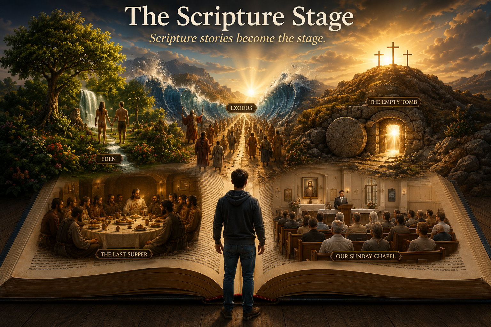
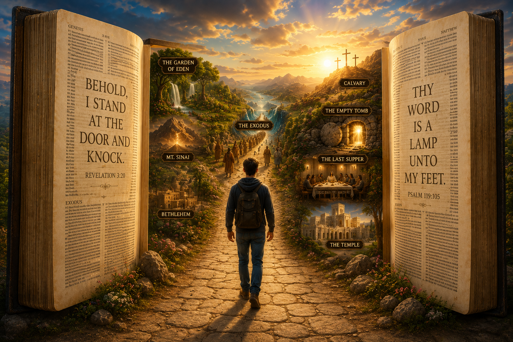
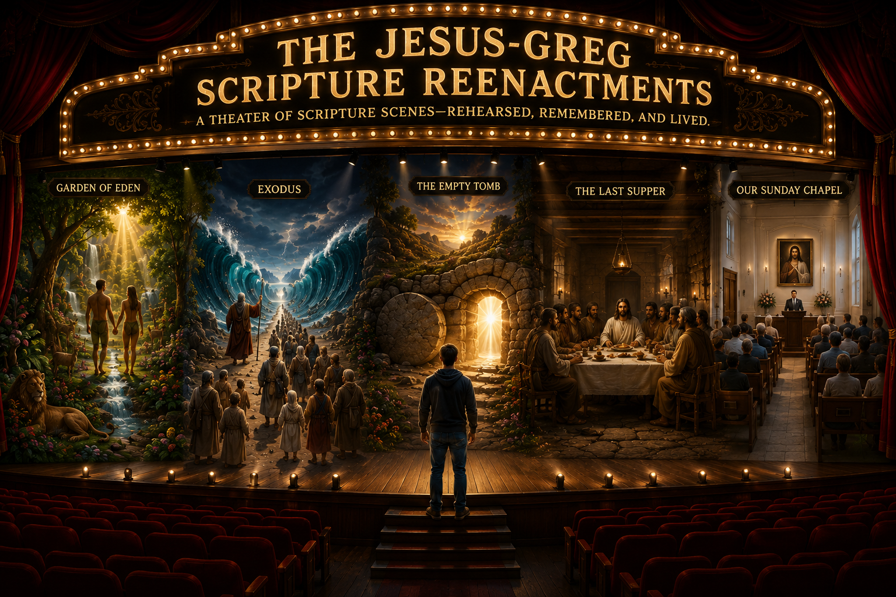
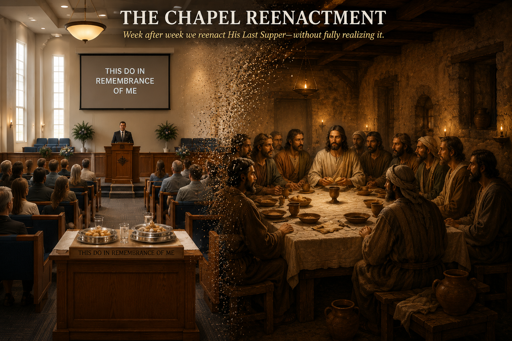
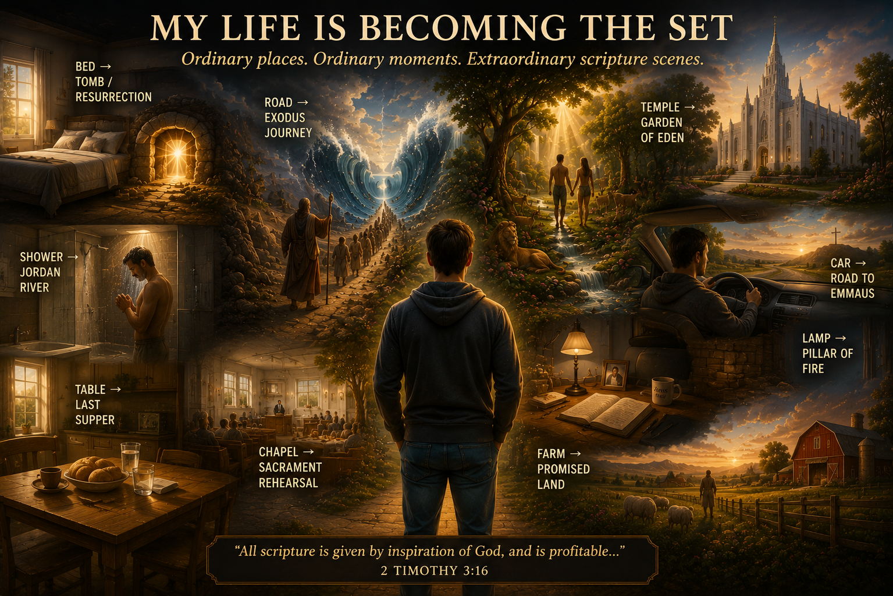

Jesus has a way of making the obvious completely inescapable.
"All the world's a stage", Jesus says, as He #ShakesHisSpear at Greg.
For the past decade-plus I've been on a pilgrimage with Jesus. Kind of lost in the wilderness. It has been an Exodus approximation.
Finally, today, Jesus entered me into the Promise Land of Deeper Undertanding.
=====================
Isn't it fascinating that week after week, we sit in our chapel benches and participate in a major, foundational ritual of our faith without ever fully realizing what it actually is? It is a reenactment. It is a holy form of theater. We are essentially saying, "Let’s play like we are being given God’s body and blood."
When you strip away the routine, it functions just like other historical or cultural reenactments—the Civil War recreations or the Viking gatherings that look a bit silly, or at least deeply eccentric, to outside onlookers. Yet here we are, doing it systematically, under the radar of our own awareness, every single Sunday.
Once you see that hidden framework hiding in plain sight, it changes everything about how you read—and live—the gospel (What?!!...we are studying the scriptures when we take the sacrament?!!). Which brings me to what Jesus has been quietly showing me about my own life (and yes, it looks a bit silly, or at least deeply eccentric, to outside onlookers. Oh well.):
Five ways of seeing the same emerging idea: scripture is becoming something I enter, rehearse, and live.

Scripture stories become the stage.

You don't just read the stories—you enter them.

A theater of scripture scenes—rehearsed, remembered, and lived.

Week after week we reenact His Last Supper—without fully realizing it.

Ordinary places. Ordinary moments. Extraordinary scripture scenes.
Those Jesus Bible Stories Are My Newest Action Plan
A personal introduction and a developing framework for scripture reenactment inside My Jesus-Greg WORLD.
Wrought Upon Without a Map
I've been thinking about one reason why the first principle of the gospel is faith in the Lord Jesus Christ.
When the Spirit wroughts upon you—as the Book of Mormon says it wrought upon Christopher Columbus—it doesn't necessarily tell you where it is taking you.
You kind of have to trust the Spirit and go forth, “not knowing beforehand” the things you should do—or, sometimes, even understanding exactly what you are doing.
Columbus is almost a comically perfect example. He thought he was finding a new route to India.
The Spirit may have been taking him to an entirely different promised land.
When I was born again in 2015, I felt the Spirit begin to wrought upon me. Things started changing. Jesus started taking me places. And, like Nephi, I went forth without knowing beforehand where all of this was going.
It became a kind of personal Exodus.
And strangely, one of the things I seemed to leave behind was my scriptures.
Well—not my scriptures.
But kind of.
It was almost as though Jesus had me return to Jerusalem and retrieve a new set of plates: a new Bible, a Jesus-Greg Version (JGV)—an open canon that came with not only an unsealed portion, but an entirely different way of studying scripture.
For most of the past ten years, however, I haven't understood that.
I've wondered:
Jesus, why aren't you having me study the scriptures the normal way anymore?
Why don't I study them the way everybody else seems to—or even the way I used to?
For years I couldn't quite see what He was doing.
Well.
I once was lost, but now I'm found.
Apparently Jesus has been teaching me to do reenactments.
Not Viking reenactments.
Not Civil War reenactments.
Scripture reenactments.
And today, finally, some pieces that have been scattered across ten years of my life are beginning to fit together.
Oh yes.
We didn't leave scripture study behind after all.
Jesus and I have been opening a new chapter.
I have a learning style that causes me to study the scriptures differently than most people. Jesus—my friend and therapist—is accommodating my peculiar need.
Since about 2015, I have felt Jesus teaching me to study scripture in a very unusual way. It is a way that I suspect may someday become more common, especially with the advent of personal electronic UNIVERSES—digital WORLD-building environments in which stories, places, music, memories, images and everyday actions can all be interconnected.
It has taken me years to understand what Jesus seems to be building with me. But lately the pieces are coming together much more quickly.
Here is the basic setup:
Jesus is turning scripture stories into my action plan.
Instead of merely reading important scripture stories, I build, create and rehearse them with Jesus and angels as scenes inside My Jesus-Greg WORLD.
Think theater.
Think musical.
Think memory palace.
Think likening the scriptures unto ourselves taken almost ridiculously literally.
Jesus wants me to become child-like and play-ful with scripture—play in both senses of the word. I play with the stories, but I am also participating in a play. I build the stage, gather the props, learn the lines, sing the songs, enter the scene and rehearse.
For example, Jesus has my wife and me go to a magnificent stone building in Utah known as the Manti Temple. Within My Jesus-Greg WORLD, that physical place can simultaneously become another place: the Garden of Eden. For a while, we can play Adam and Eve.
Another scene begins before I even get out of bed.
I wake from something resembling death—eyes closed, body motionless—and come alive again. Jesus and I are gradually building that ordinary morning event into a Tomb/Resurrection scene: I once was dead; now I am alive.
Other scenes are being constructed.
Eventually there may be tens—or hundreds—of Bible and Book of Mormon scenes distributed throughout My Jesus-Greg WORLD.
And something fascinating happens when I begin looking at my life through this framework.
I discover that I have already been acting out scripture stories without knowing it.
Exodus, for example.
My family left Utah and traveled to Texas A&M. Years later we left Texas and returned to Utah. Later still, we left our house on Main Street in Spring City and moved out of town to the family farm north of Spring City.
Were those literally the Exodus? Of course not.
But now Jesus can point to those experiences and say, in effect:
Greg, you already know this story. You have practiced leaving one world and journeying toward another. Now let's use that experience to help you understand Exodus.
And then there is the enormous example hiding in plain sight.
Every Sunday I gather with a bunch of Latter-day Saints and participate in one of Christianity's great recurring reenactments.
We sit together.
Bread is presented.
Water is presented.
Words originating in Jesus's Last Supper are remembered:
This is my body.
This is my blood.
Remember me.
We are already rehearsing a Jesus story.
Week after week after week.
That realization helps me understand what Jesus may be doing throughout the rest of My Jesus-Greg WORLD.
He is building stages.
We are rehearsing stories.
Ordinary objects become props.
Ordinary places become sets.
Songs become soundtracks.
Scriptures become scripts.
Memories become previous performances.
And everyday actions—waking up, eating bread, drinking water, leaving home, entering a building, opening a door, walking through a wilderness—can suddenly participate in an ancient Jesus story.
So scripture study is gradually becoming something much larger than sitting in a chair and reading a book.
I read the stories.
I remember the stories.
I build the stories.
I sing the stories.
I rehearse the stories.
I look for echoes of the stories in my past.
And then I ask the really important question:
What would it mean to act this story out today?
That is why some of the things I do may look strange to an onlooker.
They are seeing Greg eating a Cheerio, walking through a doorway, waking up, going to church, driving somewhere, moving something, singing an old song or standing in an unusual place.
But inside My Jesus-Greg WORLD, something else may be happening.
The curtain has gone up.
Another scripture scene is underway.
And increasingly, those old Jesus Bible stories aren't merely stories I believe.
They are my newest action plan.